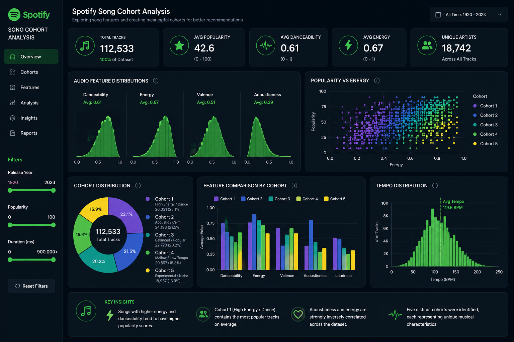
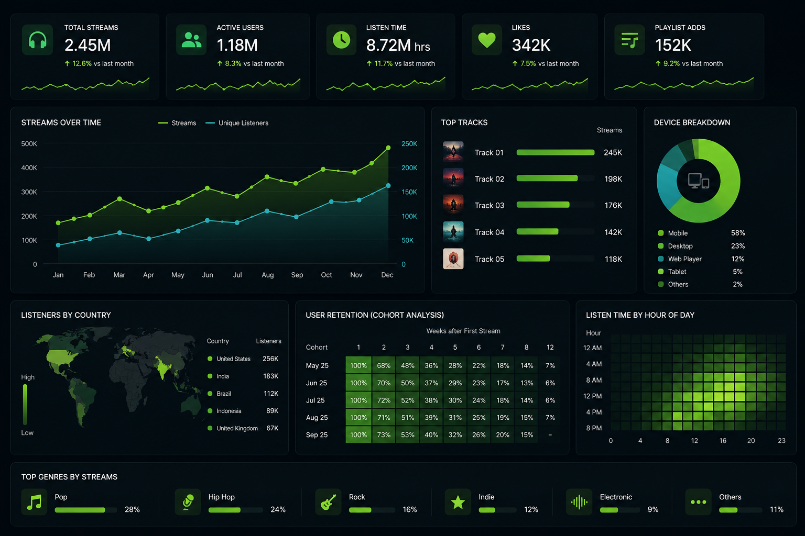
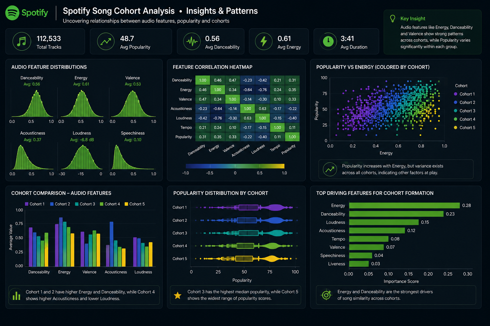

Spotify Song Cohort Analysis
Exploratory analysis and clustering of Spotify tracks to group songs into meaningful cohorts based on audio characteristics, popularity patterns, and listening-related attributes. The project focused on understanding song similarity and building interpretable music segments that could support recommendation and personalization strategies.

Project Overview
This project explored Spotify song-level data to understand how tracks can be grouped into meaningful cohorts using audio and engagement-related attributes. The objective was to move beyond individual song analysis and instead identify patterns across clusters of songs that share similar musical profiles.
The analysis focused on track characteristics such as danceability, energy, loudness, tempo, acousticness, valence, popularity, and other audio features commonly used in music analytics. By combining exploratory data analysis with unsupervised learning, the project aimed to reveal natural song segments that could be useful for playlist curation, recommendation systems, and user-personalization strategies.
What I Analyzed
- Performed exploratory data analysis on Spotify song attributes to understand feature distributions and overall data quality.
- Studied relationships between audio variables such as energy, danceability, loudness, tempo, valence, and acousticness.
- Identified patterns in popularity and track-level engagement across different song profiles.
- Prepared a feature set suitable for cohort creation using song audio characteristics and relevant numerical variables.
- Applied clustering techniques to group songs into similar cohorts based on shared musical attributes.
- Interpreted each cohort to understand the type of songs represented by each segment and the business value of those groupings.
Tools & Technologies
- Python
- Pandas
- NumPy
- Matplotlib
- Seaborn
- Scikit-learn
- EDA & Feature Analysis
- Clustering / Cohort Analysis
Dataset Snapshot
The dataset consists of Spotify track-level information enriched with song audio features and popularity-related metrics. It includes attributes such as danceability, energy, loudness, speechiness, acousticness, instrumentalness, liveness, valence, tempo, duration, and track popularity, making it suitable for both exploratory analysis and unsupervised cohort creation.
Key Findings
Song Profiles Naturally Form Distinct Cohorts
The feature space showed that songs do not behave as one homogeneous group. Based on their audio signatures, tracks can be segmented into distinct cohorts representing different musical moods, listening styles, and energy levels.
High-Energy and Dance-Oriented Tracks Clustered Together
Songs with stronger danceability, higher energy, and louder production tended to appear together, indicating a cohort aligned with upbeat, performance-driven, and commercially active listening patterns.
Acoustic / Calm Tracks Formed a Separate Segment
Tracks with higher acousticness, softer energy, and more relaxed emotional tone showed a different behavioral profile from energetic songs, highlighting the presence of mood-based segmentation within the catalog.
Popularity Alone Was Not Enough to Explain Similarity
While popularity added context, the clustering structure was driven more strongly by audio features than by a single engagement metric. Songs with similar sonic properties could belong to the same cohort even when popularity levels differed.
Cohorts Can Support Better Recommendation Logic
Instead of recommending tracks purely by artist or genre labels, cohort-based grouping provides a more behavior-aware view of the catalog. This can improve playlist generation, music discovery, and personalized listening journeys.
Visual Highlights


Outcome & Takeaways
This project demonstrated how Spotify song data can be transformed into meaningful music cohorts using exploratory analysis and clustering. By studying audio features and grouping similar tracks together, the analysis uncovered interpretable segments that reflect different listening experiences and musical styles. The outcome shows how cohort-based thinking can support smarter recommendation systems, playlist personalization, and more structured music catalog exploration.